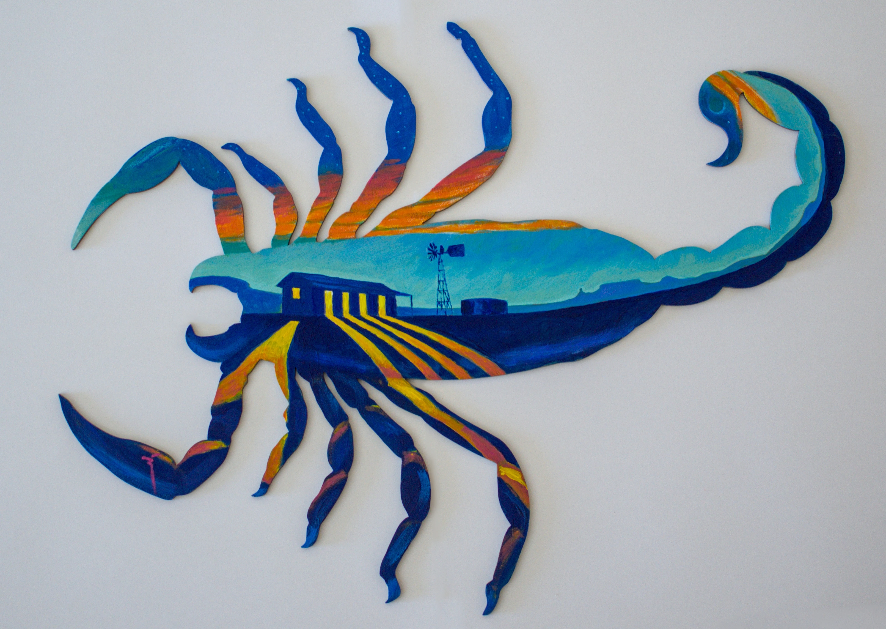

El Día de Muertos fue reconocido por la UNESCO como Obra Maestra del Patrimonio Oral e Inmaterial de la Humanidad el 7 de noviembre de 2003 y forma parte de la Lista Representativa del Patrimonio Cultural Inmaterial de la Humanidad desde 2008. Este reconocimiento abre la posibilidad de presentar una exposición en la que confluyan sincretismos de diferentes religiones, etnias y formas de pensar.
Esta exposición juega con la idea del diablo. En el simbolismo y la iconografía de las religiones, El Diablo es la encarnación de toda la maldad humana, el eterno oponente de Dios. En las religiones politeístas, aparece como una deidad malvada, como la causa de desgracias y catástrofes para la humanidad.
En México, el diablo combina diferentes tradiciones: algunas provienen de la Edad Media europea, otras de cosmologías africanas y asiáticas. Con los españoles y la religión católica, el diablo llegó a Mesoamérica, donde se fusionó con las creencias y dioses del inframundo de la población indígena.
Para la Iglesia Católica, el diablo es un agente de tentación y placeres mundanos, cuyos castigos están anclados en los siete pecados capitales. En la imaginación mexicana, sin embargo, Lucifer ha pasado de ser una entidad casi inmaterial y abstracta a una figura viva, casi humana. Sigue siendo seductor y mediador de lo fácil y agradable, pero en su versatilidad incluso se le ha perdido el miedo, incluso si el precio de su favor y protección es siempre muy alto.
¡Desafiemos al diablo y vivamos!
Y cuando llegue nuestro día, que la muerte sea bienvenida, donde sea que nos sorprenda.
Porque lo que se baila y se vive permanece con nosotros para siempre.
{kind=link}